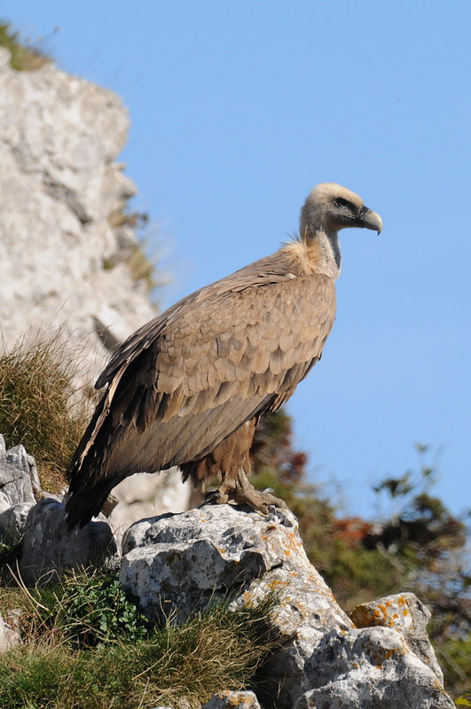
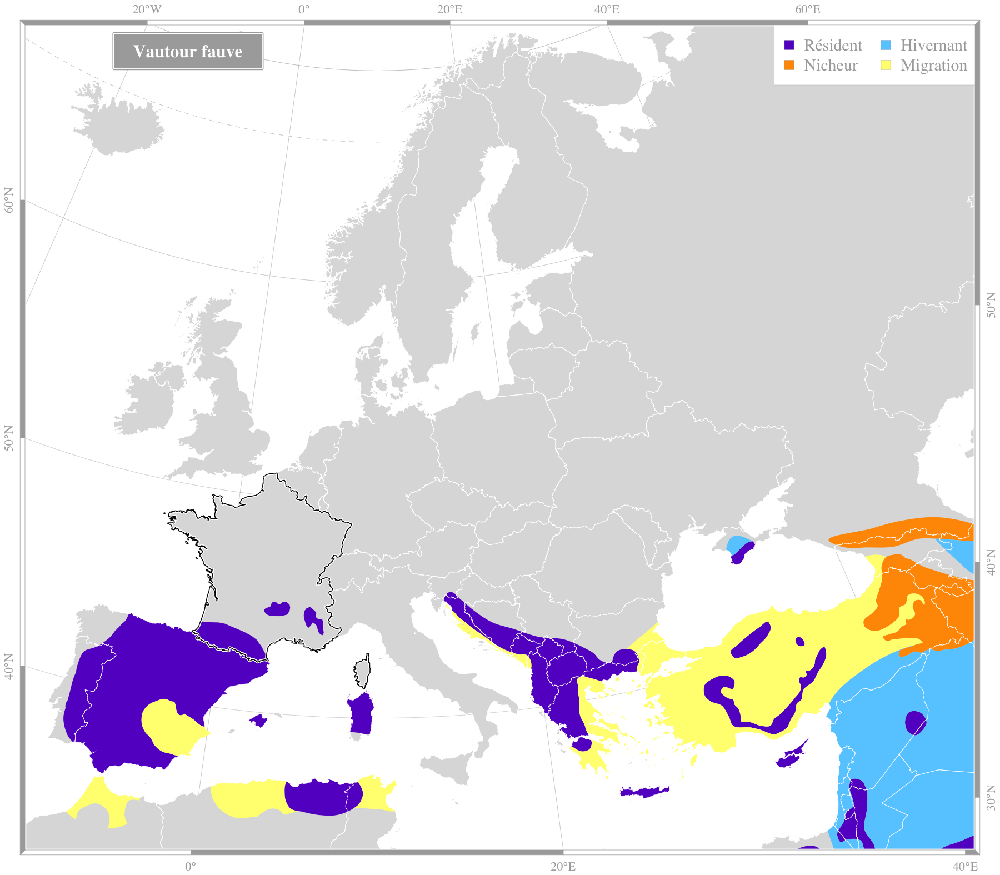

|  Crédit : Markel Olano, Flickr |
Vautour fauveGyps fulvus (Hablizl, 1783)Ordre : Accipitriformes - Famille : Accipitridae
Envergure : 230-270 cm Longueur : 95-105 cm Alimentation : charognard Habitat : moyenne montagne, Pyrénées, Alpes, Gramds Causses |
|||||
Répartition en France
Espèce migratrice : non |

Source des données : Bird Life International |